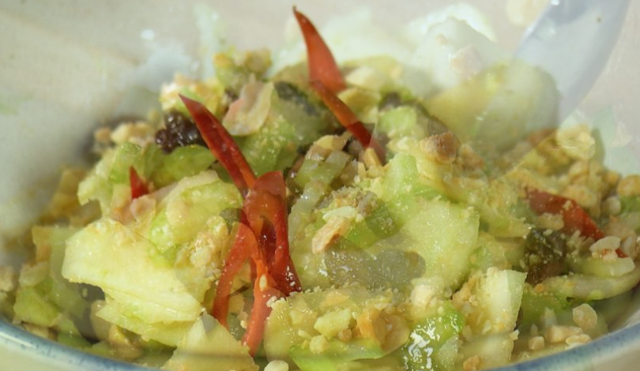

Салат сельдерей с арахисом

Ингредиенты:
- Яблоко - 2шт
- Стебли сельдерея 2 шт
- Соус чили 2 ч.л.
- Арахис - 100 гр
- Масло оливковое
- Соль
- Сахар
Приготовление:
1. Очистить и нарезать яблоко, сельдерей соайсами.
3. Добавляем в салат соль, сахар и соус чили (или нарезанные настоящие стручки чили).
4. Размолоть орехи, добавить в салат.
6. Заправить оливковым маслом и перемешать.